À esquerda, a proposta aprovada. À direita, os componentes TSX atuais, renderizados com adaptadores DOM no WebKit e dados das capturas; não são capturas nativas do iPhone. Os espaços do sistema ficam em branco. O cabeçalho é colocado fora do scroll conforme o Workspace real. Os ícones têm substitutos na pré-visualização e as capas de fallback não são renderizadas pelo adaptador expo-image; a app continua a usar os componentes originais.
Limitação de medidas: os cartões de atividade e de partidas podem crescer alguns pontos além da altura desenhada para acomodar entrelinhas reais e alvos de 44 pt. As alturas são mínimas, sem cortes de texto. Medidas, verificações e limitações.
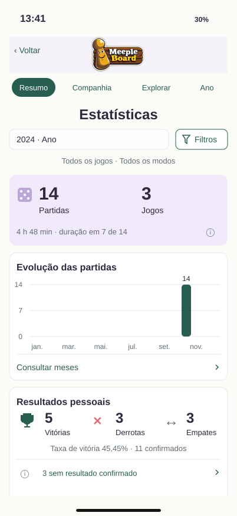
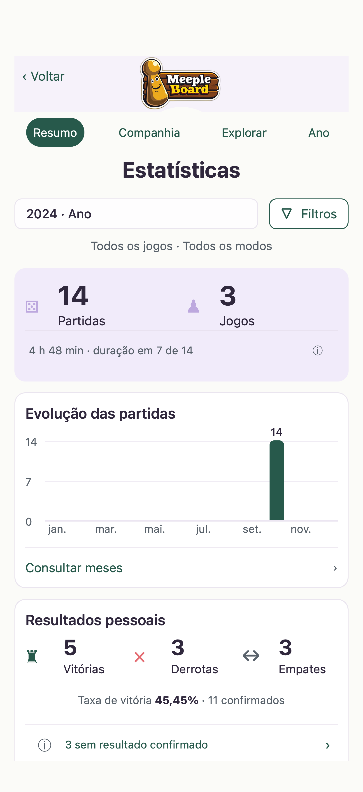
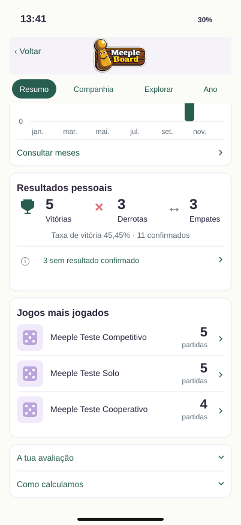
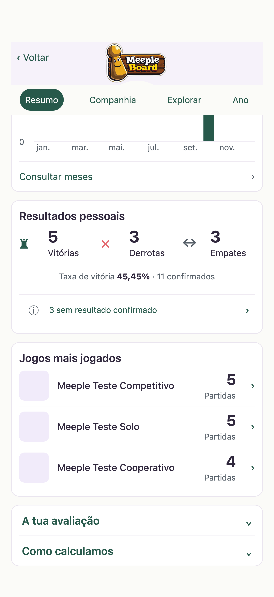
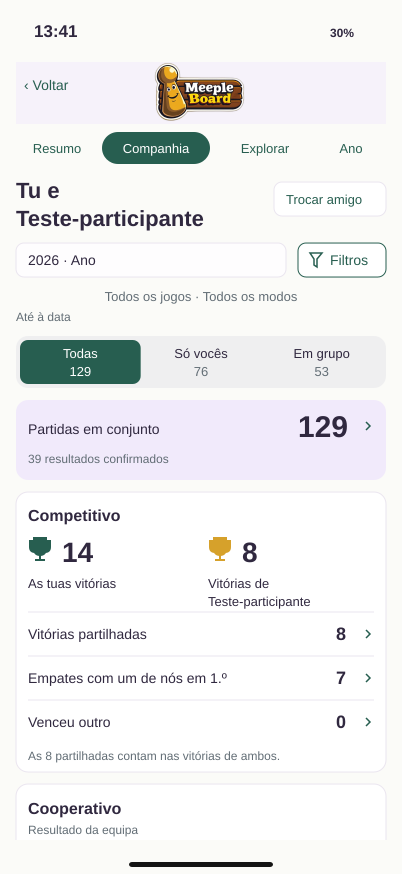
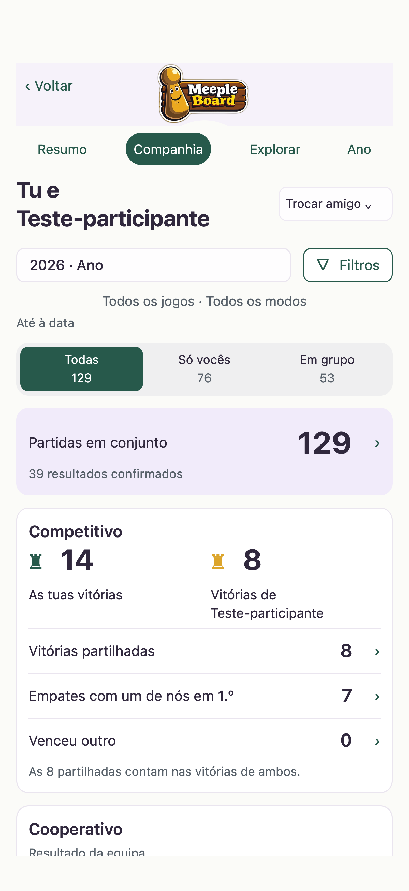
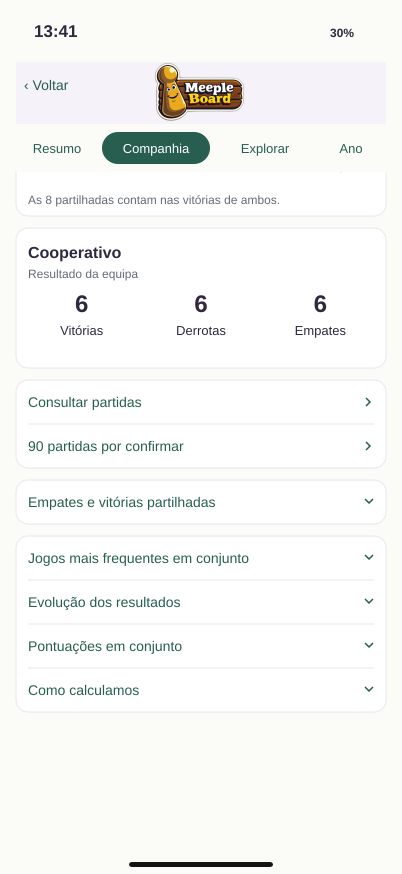
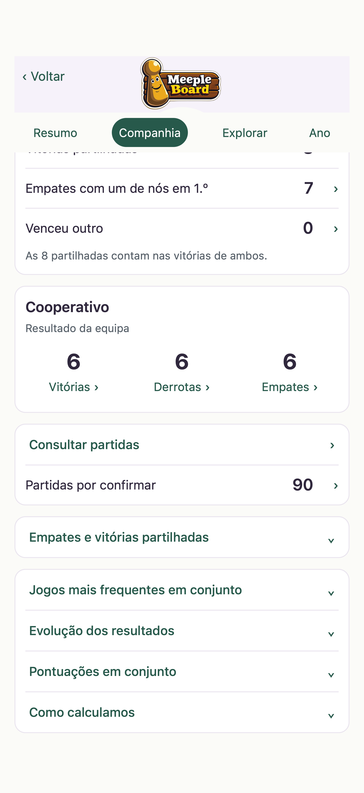
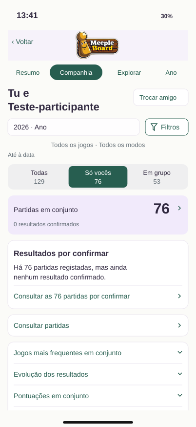
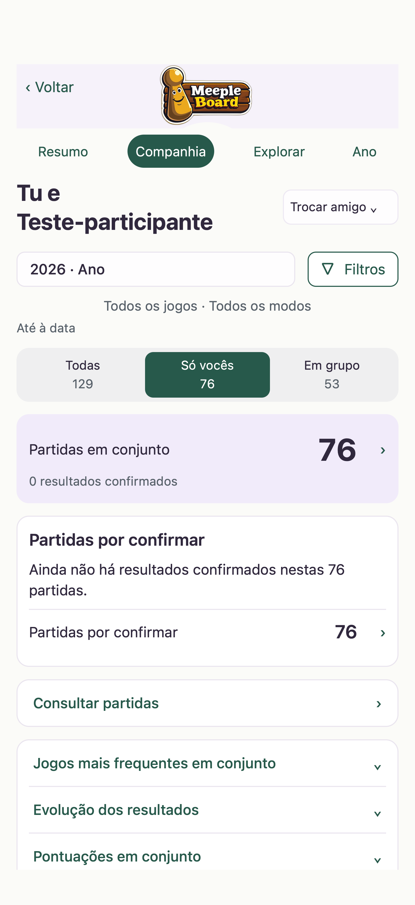
Previsão de layout, sem equivalência garantida a Dynamic Type nativo.
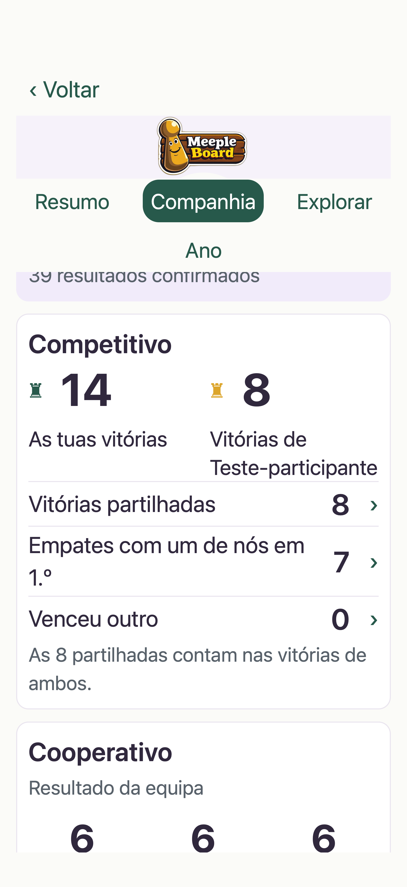